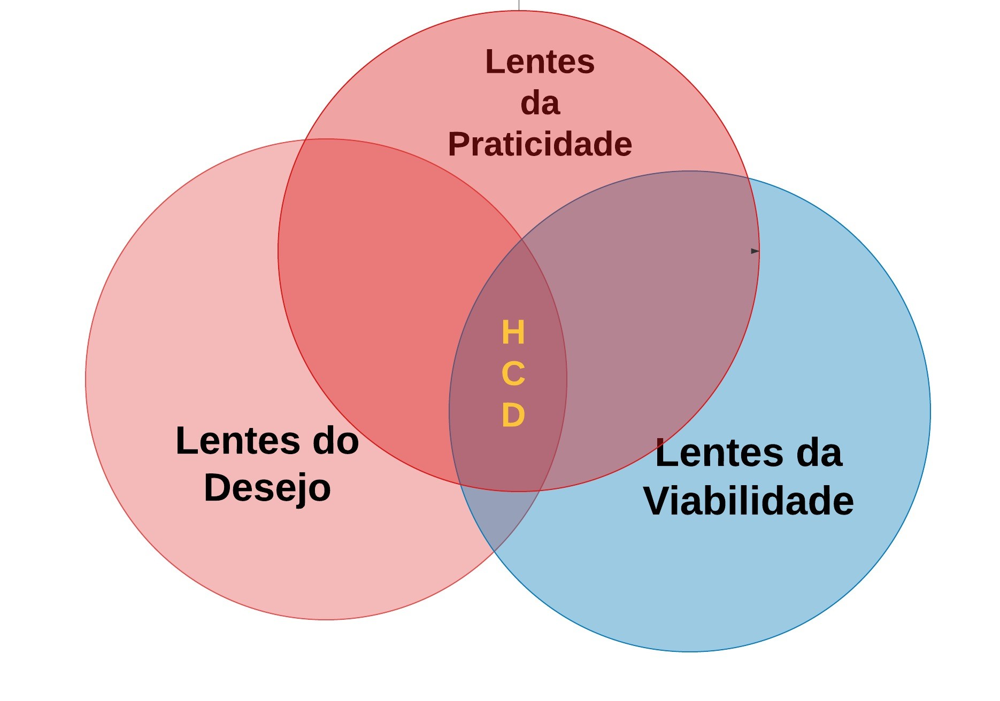
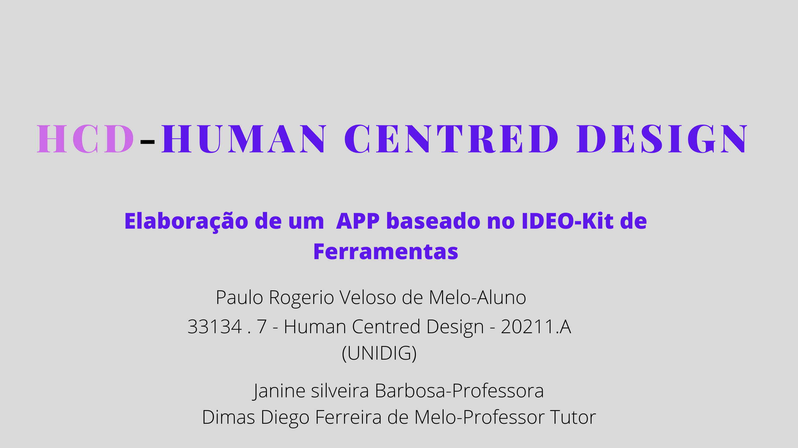

|  |  |
Com as informações adiquiridas na fase "OUVIR", passou-se a síntese das idéias colocadas pelos usuários. Ao conhecer bem as pessoas para qual o projeto do APP-Cartâo de Vacinas estava sendo projetado e depois de discussões em local de trabalho e o alto grau de conhecimento técnico do desenvolvedor , chegou-se a uma provável formatação para o APP e proposto um esquema para uma implementação de um protótipo.
Procurou-se simplificar e deixar o aplicativo com funcionalidades as mais essenciais possiveis e as idéais propostas foram sintetizadas no diagrama abaixo:
| © Paulo Rogerio Veloso de Melo-Baseado no HCD-Human Centred Design-Kit de Ferramentas 2ª edição-Versão em Português. |